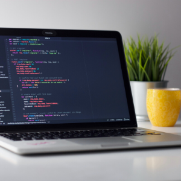
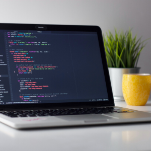

Pick Me Up

A showcase of my projects and abilities.
Hello and welcome to my portfolio! I’m a senior completing my bachelor's in Software Engineering at the University of Texas at Arlington. I decided to go for this degree because I have always had an interest in technology. Indeed, witnessing this evolution towards all that is digital fascinates me day by day. Today, I am able and excited to make an impact on people's lives through this technology. I have acquired several fundamental concepts in the field of IT, more particularly in mobile development like Android Studio or in backend development. I also gained solid experience in object-oriented languages like Java or C ++. Finally, I continue to solidify my knowledge thanks to the practice of algorithms and data structures. I am someone who has the desire to revolutionize the world with my ideas which I am ready to share. I am convinced that this career that I am about to embark on will allow me to fulfill this dream of mine.
Have you ever had the experience of going to the post office to send a package and finding yourself in a line as long as the Great Wall of China? If you have faced this situation at least once and want to save time, this app is for you! This project aims to facilitate anyone who wants to send their package without necessarily going to the post office. It offers the user to have their package collected by a delivery guy who will take care of depositing the package at the post office. After logging into their personal account using login credentials, the user will be responsible for entering the information (dimensions, weight, and so on) of each package he wishes to send. Then the customer will be offered the possibility of paying securely through his personal account. This application also serves as a price comparison between the different postal service providers so that the user can make a choice that will be to his advantage.
The goal of this project was to expand the functionality of the FabApp by implementing a notification system that displays an alert system with a dropdown menu that is updated in real-time and details any of the activities available at the FabLab at the UTA campus where the user can monitor and manage their time with a ticketing system in the FabLab as efficiently and effectively as possible. Working on an agile process, we have executed this plan by giving the user the option to either be notified through an SMS text or an email at a specific time interval. Any data pertaining to the user’s personal information is removed as soon as the notification is sent. A minimal database was developed to connect a specific user’s ticket number to any activity done in the FabLab.
 

This project is not the most complicated in that I have worked on but I wanted to mention it since it was the first in which I participated in a school environment. With the help of my team, we have collaborated to create an application that allows the user to create their own nutritious menu of the week. Once the menu is created, the user has the choice to modify, add, or delete this menu, a task I was personally in charge of. The application also has access to a text file database containing several recipes so that the user can include the recipes of their choice in their own menu. Through this project, I was introduced to group work in a computer science environment which allowed me to become familiar with Git version control.